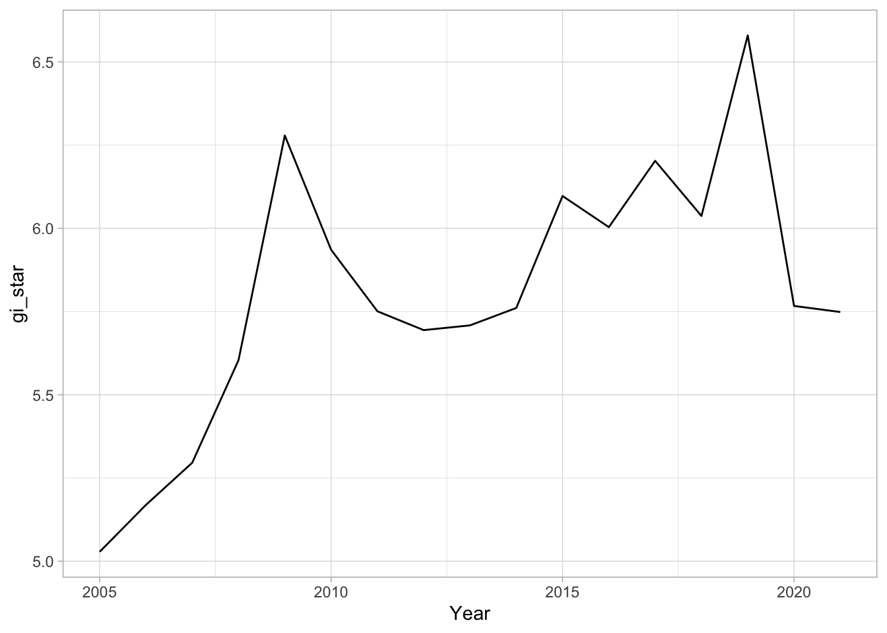
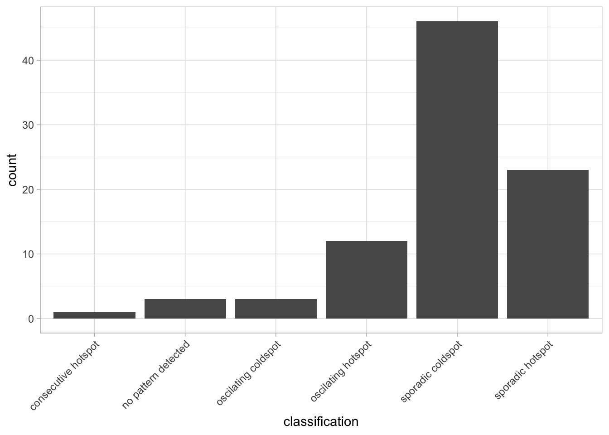
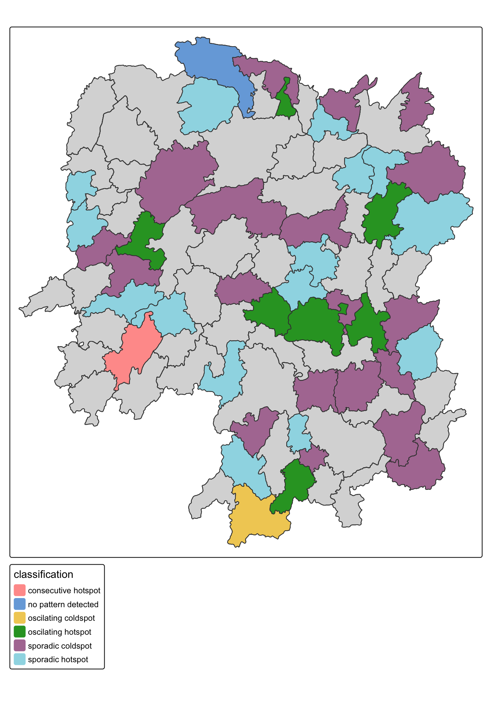

pacman::p_load(sf, sfdep, tmap, plotly, tidyverse, Kendall)Emerging Hot Spot Analysis
In-class Exercise 6
1 Overview
Emerging Hot Spot Analysis (EHSA) is used to identify how statistically significant hot and cold spots change across time. The workflow combines a space-time cube, Getis-Ord Gi* statistics, and the Mann-Kendall trend test.
The analysis contains four main steps:
- Build a space-time cube.
- Compute local Getis-Ord Gi* statistics for each time period.
- Evaluate the temporal trend of Gi* values with the Mann-Kendall test.
- Classify locations into EHSA categories.
NoteMy observation
This workflow adds a temporal reading to the hot spot analysis. A county can be important because it is consistently hot, newly hot, weakening, or moving between patterns over the study period.
2 Getting Started
2.1 Installing and Loading the R Packages
NoteMy observation
The package list matches the chapter workflow. sf handles spatial data, sfdep handles the space-time cube and EHSA statistics, tmap maps the final classification, plotly makes the Gi* trend line interactive, and Kendall runs the Mann-Kendall trend test.
3 The Data
The exercise uses two Hunan data sets:
Hunan, a county-level geospatial data set in ESRI shapefile format.Hunan_GDPPC.csv, an aspatial table of county GDP per capita values from 2005 to 2021.
3.1 Importing Geospatial Data
hunan <- st_read(
dsn = "data/geospatial",
layer = "Hunan",
quiet = TRUE
) %>%
st_transform(crs = 32650)
hunanSimple feature collection with 88 features and 7 fields
Geometry type: POLYGON
Dimension: XY
Bounding box: xmin: -316283 ymin: 2735534 xmax: 230955.3 ymax: 3349137
Projected CRS: WGS 84 / UTM zone 50N
First 10 features:
NAME_2 ID_3 NAME_3 ENGTYPE_3 Shape_Leng Shape_Area County
1 Changde 21098 Anxiang County 1.869074 0.10056190 Anxiang
2 Changde 21100 Hanshou County 2.360691 0.19978745 Hanshou
3 Changde 21101 Jinshi County City 1.425620 0.05302413 Jinshi
4 Changde 21102 Li County 3.474325 0.18908121 Li
5 Changde 21103 Linli County 2.289506 0.11450357 Linli
6 Changde 21104 Shimen County 4.171918 0.37194707 Shimen
7 Changsha 21109 Liuyang County City 4.060579 0.46016789 Liuyang
8 Changsha 21110 Ningxiang County 3.323754 0.26614198 Ningxiang
9 Changsha 21111 Wangcheng County 2.292093 0.13049161 Wangcheng
10 Chenzhou 21112 Anren County 2.240739 0.13343936 Anren
geometry
1 POLYGON ((22320.48 3301894,...
2 POLYGON ((35522.96 3230355,...
3 POLYGON ((5120.127 3285521,...
4 POLYGON ((-43433.9 3326204,...
5 POLYGON ((-19307.27 3304609...
6 POLYGON ((-89888.78 3347561...
7 POLYGON ((205590.4 3163847,...
8 POLYGON ((80276.09 3147094,...
9 POLYGON ((88026.26 3162804,...
10 POLYGON ((119822.4 2973043,...
NoteMy observation
The shapefile has 88 Hunan county units. Transforming to EPSG:32650 gives a projected coordinate system, which is more suitable for distance-based weights than longitude-latitude coordinates.
3.2 Importing Attribute Table
GDPPC <- read_csv("data/aspatial/Hunan_GDPPC.csv",
show_col_types = FALSE)
glimpse(GDPPC)Rows: 1,496
Columns: 3
$ Year <dbl> 2005, 2005, 2005, 2005, 2005, 2005, 2005, 2005, 2005, 2005, 200…
$ County <chr> "Longshan", "Changsha", "Wangcheng", "Ningxiang", "Liuyang", "Z…
$ GDPPC <dbl> 3469, 24612, 14659, 11687, 13406, 8546, 10944, 8040, 7383, 1168…
NoteMy observation
The GDPPC table is in long format with Year, County, and GDPPC. This format is suitable for spacetime() because each county can be matched to repeated yearly observations.
4 Creating a Time Series Cube
GDPPC_st <- spacetime(
GDPPC,
hunan,
.loc_col = "County",
.time_col = "Year"
)is_spacetime_cube(GDPPC_st)[1] TRUE
NoteMy observation
The TRUE result confirms that the attribute table and geometry have been combined into a valid space-time cube. The location key is County, and the time key is Year.
5 Computing Gi*
5.1 Deriving the Spatial Weights
GDPPC_nb <- GDPPC_st %>%
activate("geometry") %>%
mutate(
nb = include_self(st_contiguity(geometry)),
wt = st_inverse_distance(
nb,
geometry,
scale = 1,
alpha = 1
),
.before = 1
) %>%
set_nbs("nb") %>%
set_wts("wt")
TipThings to learn from the code
activate("geometry")switches the cube context to the county geometry table.include_self()includes the focal county in the Gi* neighbourhood.st_contiguity()identifies neighbouring counties.st_inverse_distance()gives closer neighbours higher influence.set_nbs()andset_wts()copy the neighbour and weight columns into the space-time data structure.
NoteMy observation
Row order matters after set_nbs() and set_wts(). Reordering the cube after assigning neighbours and weights can disconnect the values from their intended spatial relationships.
6 Computing Gi*
gi_stars <- GDPPC_nb %>%
group_by(Year) %>%
mutate(gi_star = local_gstar_perm(GDPPC, nb, wt)) %>%
tidyr::unnest(gi_star)
glimpse(gi_stars)Rows: 1,496
Columns: 15
Groups: Year [17]
$ Year <dbl> 2005, 2005, 2005, 2005, 2005, 2005, 2005, 2005, 2005, 200…
$ County <chr> "Anxiang", "Hanshou", "Jinshi", "Li", "Linli", "Shimen", …
$ GDPPC <dbl> 8184, 6560, 9956, 8394, 8850, 9244, 13406, 11687, 14659, …
$ nb <list> <1, 2, 3, 4, 57, 85>, <1, 2, 57, 58, 78, 85>, <1, 3, 4, …
$ wt <list> <0.000000e+00, 1.535214e-05, 3.582140e-05, 2.166411e-05,…
$ gi_star <dbl> 0.39812392, -0.23690950, 1.05308649, 0.96565566, 1.047539…
$ cluster <fct> High, Low, High, High, High, High, High, High, High, Low,…
$ e_gi <dbl> 0.011598267, 0.010950017, 0.012729913, 0.011746194, 0.011…
$ var_gi <dbl> 2.659239e-06, 3.014996e-06, 3.287173e-06, 2.688503e-06, 3…
$ std_dev <dbl> 0.32638016, -0.02459984, 0.46230397, 0.99952108, 0.877100…
$ p_value <dbl> 0.744136750, 0.980374148, 0.643863350, 0.317542333, 0.380…
$ p_sim <dbl> 0.636, 0.916, 0.528, 0.288, 0.340, 0.936, 0.032, 0.400, 0…
$ p_folded_sim <dbl> 0.318, 0.458, 0.264, 0.144, 0.170, 0.468, 0.016, 0.200, 0…
$ skewness <dbl> 1.0011967, 0.7089867, 0.9507632, 0.8595838, 1.0834739, 0.…
$ kurtosis <dbl> 2.0391323, 0.5502756, 1.1896203, 0.9940049, 1.8265140, 0.…
NoteMy observation
Gi* is computed within each year, so the statistic compares a county and its neighbourhood against other counties in the same time slice. This keeps the hot spot interpretation year-specific before the trend test is applied. The permutation calculation can produce a different result across runs when no seed is specified.
7 Mann-Kendall Test
A monotonic series keeps moving in one direction or stays flat. The Mann-Kendall test checks whether a time series has a monotonic trend.
Hypotheses:
- H0: No monotonic trend.
- H1: A monotonic trend is present.
Interpretation:
- Reject H0 when the p-value is smaller than the selected alpha value.
- Tau ranges from
-1to1. - A negative tau indicates a decreasing trend.
- A positive tau indicates an increasing trend.
7.1 Mann-Kendall Test on Gi*
cbg <- gi_stars %>%
ungroup() %>%
filter(County == "Changsha") |>
select(County, Year, gi_star)ggplot(
data = cbg,
aes(x = Year, y = gi_star)
) +
geom_line() +
theme_light()
NoteMy observation
Changsha is used as a focused example because it makes the temporal trend easier to inspect before repeating the test for every county. The line chart shows whether the local hot spot strength stays stable, increases, or weakens across the years.
7.2 Interactive Mann-Kendall Plot
p <- ggplot(
data = cbg,
aes(x = Year, y = gi_star)
) +
geom_line() +
theme_light()
ggplotly(p)
NoteMy observation
The interactive version is useful for checking exact yearly Gi* values. It helps separate a broad trend from a single-year spike.
7.3 Printing Mann-Kendall Test Report
cbg %>%
summarise(
mk = list(unclass(Kendall::MannKendall(gi_star)))
) %>%
tidyr::unnest_wider(mk)# A tibble: 1 × 5
tau sl S D varS
<dbl> <dbl> <dbl> <dbl> <dbl>
1 0.485 0.00742 66 136. 589.
NoteMy observation
In the Mann-Kendall output, sl is the p-value. A significant positive tau for Changsha supports an upward Gi* trend, meaning its GDPPC hot spot signal becomes stronger over time.
7.4 Mann-Kendall Test Data Frame
ehsa_mk <- gi_stars %>%
group_by(County) %>%
summarise(
mk = list(unclass(Kendall::MannKendall(gi_star))),
.groups = "drop"
) %>%
tidyr::unnest_wider(mk)
head(ehsa_mk)# A tibble: 6 × 6
County tau sl S D varS
<chr> <dbl> <dbl> <dbl> <dbl> <dbl>
1 Anhua 0.191 0.303 26 136. 589.
2 Anren -0.294 0.108 -40 136. 589.
3 Anxiang 0 1 0 136. 589.
4 Baojing -0.691 0.000128 -94 136. 589.
5 Chaling -0.0882 0.650 -12 136. 589.
6 Changning -0.750 0.0000318 -102 136. 589.
NoteMy observation
Running the Mann-Kendall test for every county turns the single-county example into a province-wide trend table. Counties with small sl values have stronger evidence of changing Gi* scores.
7.5 Sorting Significant Emerging Hot and Cold Spots
emerging <- ehsa_mk %>%
arrange(sl, abs(tau)) %>%
slice(1:10)
head(emerging)# A tibble: 6 × 6
County tau sl S D varS
<chr> <dbl> <dbl> <dbl> <dbl> <dbl>
1 Shuangfeng 0.868 0.00000143 118 136. 589.
2 Xiangtan 0.868 0.00000143 118 136. 589.
3 Xiangxiang 0.868 0.00000143 118 136. 589.
4 Chengbu -0.824 0.00000482 -112 136. 589.
5 Dongan -0.824 0.00000482 -112 136. 589.
6 Wugang -0.809 0.00000712 -110 136. 589.
NoteMy observation
Sorting by sl highlights the counties with the strongest trend evidence. Sorting with abs(tau) keeps both upward and downward trends visible in the same table.
8 Performing Emerging Hot Spot Analysis
ehsa <- emerging_hotspot_analysis(
x = GDPPC_st,
.var = "GDPPC",
k = 1,
nsim = 99
)
glimpse(ehsa)Rows: 88
Columns: 4
$ location <chr> "Anxiang", "Hanshou", "Jinshi", "Li", "Linli", "Shimen"…
$ tau <dbl> 0.22058827, 0.14705884, 0.44117653, -0.82352948, 0.1176…
$ p_value <dbl> 2.322487e-01, 4.338268e-01, 1.508367e-02, 4.822108e-06,…
$ classification <chr> "sporadic coldspot", "sporadic hotspot", "oscilating ho…
NoteMy observation
emerging_hotspot_analysis() wraps the Gi* and trend logic into a classification workflow. The k = 1 setting uses one temporal lag, and nsim = 99 keeps the simulation count consistent with the course example. The exact significant counties depend on the Monte Carlo simulation state.
8.1 Visualising the Distribution of EHSA Classes
ggplot(
data = ehsa,
aes(x = classification)
) +
geom_bar() +
theme_light() +
theme(axis.text.x = element_text(angle = 45, hjust = 1))
NoteMy observation
The bar chart gives a quick count of EHSA classes before mapping. This helps identify whether the province is dominated by stable patterns, sporadic patterns, or trend categories.
8.2 Visualising EHSA
hunan_ehsa <- hunan %>%
left_join(ehsa, by = join_by(County == location))ehsa_sig <- hunan_ehsa %>%
filter(p_value < 0.05)
tmap_mode("plot")
tm_shape(hunan_ehsa) +
tm_polygons() +
tm_borders(fill_alpha = 0.5) +
tm_shape(ehsa_sig) +
tm_fill(
"classification",
fill.legend = tm_legend(position = tm_pos_out("center", "bottom"))
) +
tm_borders(fill_alpha = 0.4)
NoteMy observation
The map keeps all counties visible, then overlays only significant EHSA classes. This makes insignificant counties part of the interpretation instead of hiding them from the spatial context.
9 Interpretation of EHSA Classes
9.1 Hot Spot Classes
Hot spot classes represent counties where high GDPPC values cluster with nearby high values. A persistent hot spot indicates repeated significance across time, while a new or intensifying hot spot indicates recent strengthening.
NoteMy reflection
Hot spot labels describe spatio-temporal association. They do not explain the economic mechanism by themselves. The result should be read together with Hunan’s urban structure, transport access, and development policy context.
9.2 Cold Spot Classes
Cold spot classes represent counties where low GDPPC values cluster with nearby low values. Persistent cold spots point to repeated spatial disadvantage, while diminishing cold spots suggest weakening low-value clustering.
NoteMy reflection
Cold spot patterns are important because they show spatial concentration of lower GDPPC. These counties may need separate interpretation from isolated low values, since EHSA reads each county with its surrounding neighbourhood.
9.3 Sporadic and Oscillating Classes
Sporadic classes occur when significance appears in some years and disappears in others. Oscillating classes indicate movement between hot and cold signals across the time series.
NoteMy reflection
These categories are useful warnings against over-reading a single-year map. A county with intermittent significance may reflect transition, local volatility, or sensitivity to the chosen neighbourhood definition.
9.4 Reporting Considerations
EHSA results should be reported with the variable, time period, neighbourhood definition, weight method, temporal lag, simulation count, and significance threshold.
NoteMy reflection
For this exercise, the result is specific to GDPPC from 2005 to 2021, Hunan county boundaries, contiguity neighbours with self-inclusion, inverse-distance weights, k = 1, and nsim = 99.